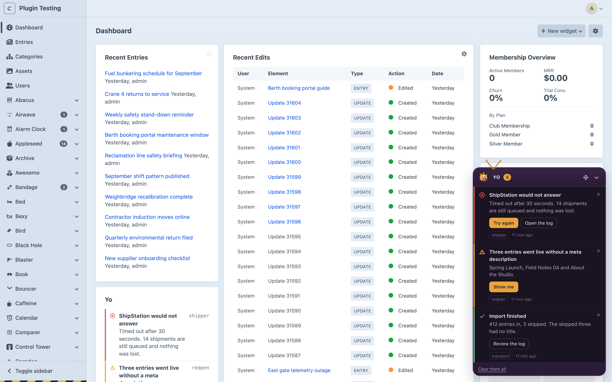
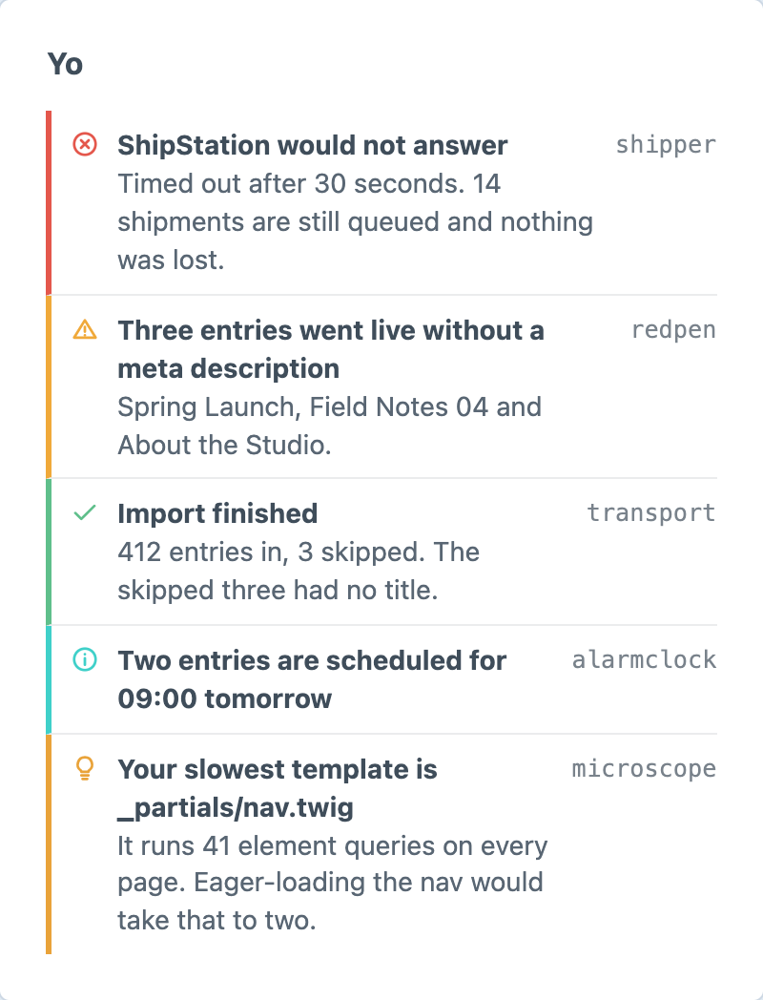
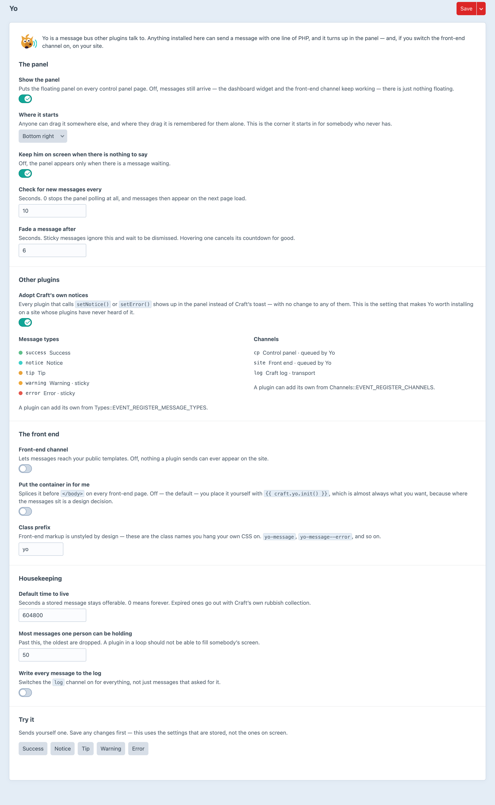

A flash-message bus that plugins talk to.
One API for every plugin on the site. Types, buttons, recipients — and an answer to “did anybody actually see it?”
And then tells the plugin that sent it whether it was shown, read, dismissed — or which button somebody pressed.
Five types, each with its own colour, icon and whether it waits to be dismissed — and a sixth, if your plugin wants one.
Yo takes over Craft’s own control panel notices. Thirty installed plugins, none of them changed, all of them in the panel.
On by default. Turn it off and Craft’s own toasts come straight back.
Write one class, register it from an event, and every plugin already sending messages reaches Slack — without one of them changing.
Four events, each carrying the message and the context you set when you sent it — so you can find whatever you were doing at the time.
A message with a button is a control surface, not a notification.
A console run has no current user, so address it — and Yo says so in the log rather than pretending it went somewhere.
Five plugins, one panel. Drag it to any of six anchors and it stays there — for you, and not for anybody else.

A widget of everything waiting, with the plugin that sent each one. Reading the dashboard is not the same as dismissing what is on it.

Including the ones other plugins registered. It is the fastest way to see what is actually installed and talking.
